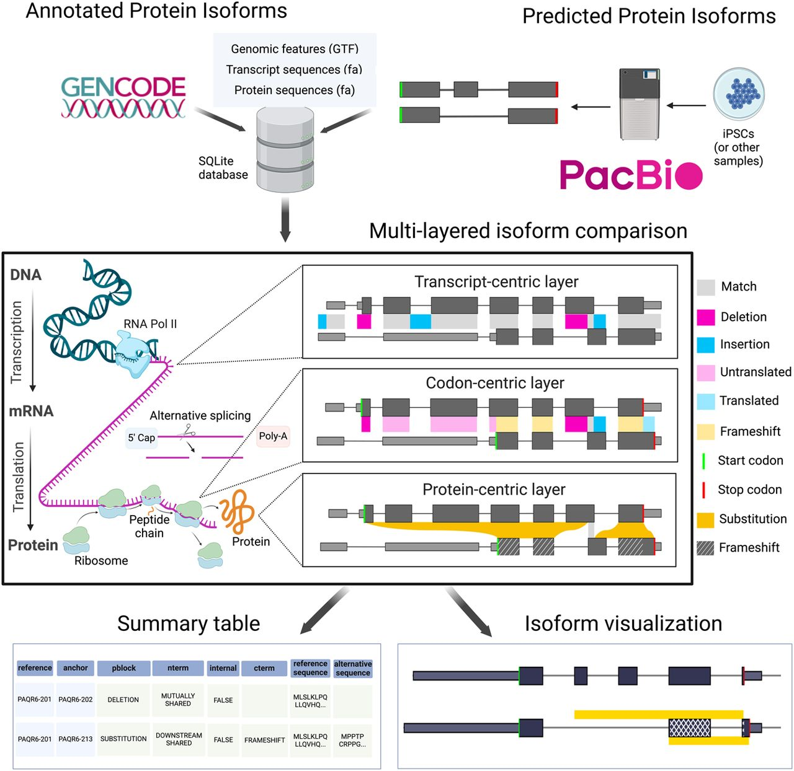

Mayank Murali
Computational Associate II • Broad Institute of MIT and Harvard
Computational Associate II • Broad Institute of MIT and Harvard
I'm a computational researcher passionate about leveraging data science and machine learning to solve complex problems in biological and biomedical research. Currently working at the Broad Institute of MIT and Harvard, I focus on developing innovative computational methods and tools.
With a background in computer science and specialized training in AI, graph machine learning, and network science, I bridge the gap between computational theory and practical applications in genomics and healthcare.
View My ResearchComputational Associate II
2023 - Present
Developing computational tools and pipelines for genomic data analysis. Working on machine learning models for biological insights and creating scalable data processing workflows.
Senior Data Analyst
2022 - 2023
Led data analysis initiatives and developed analytical solutions to support research and institutional decision-making.

Biosurfer is a computational tool for comparing protein isoforms by tracking transcriptional, splicing, and translational variations that drive sequence differences. Analysis of 35K+ GENCODE protein pairs revealed that 70% of variable N-termini arise from alternative transcription start sites, while 72% of C-terminal changes involve frameshift-inducing splicing events. Available as a Python package.

B.Tech in Computer Science & Engineering
2015 - 2019
Studied foundational computer science and engineering subjects like DS, Algorithms, DBMS, OS, CA, IoT, and more.
M.S. in Computer Science
2019 - 2022
Focused on , and Network Science. Worked as a research assistant and created innovative algorithms.